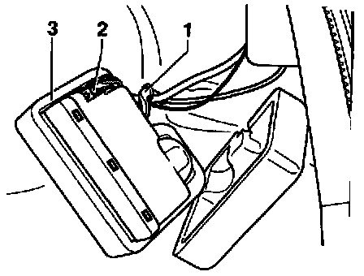

Power Door Lock Control Module: Service and Repair
Central Locking System Pump and Control Module, Removing and InstallingRemoving and Installing:

- Open cable ties or disconnect retainer straps and remove housing sections -3-.
- Disconnect multi-pin connector and bi-pressure hose from pump.
NOTE: When connecting the multi-pin connector make sure the bi-pressure hose is also properly connected.